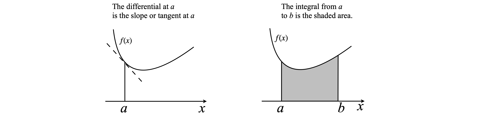
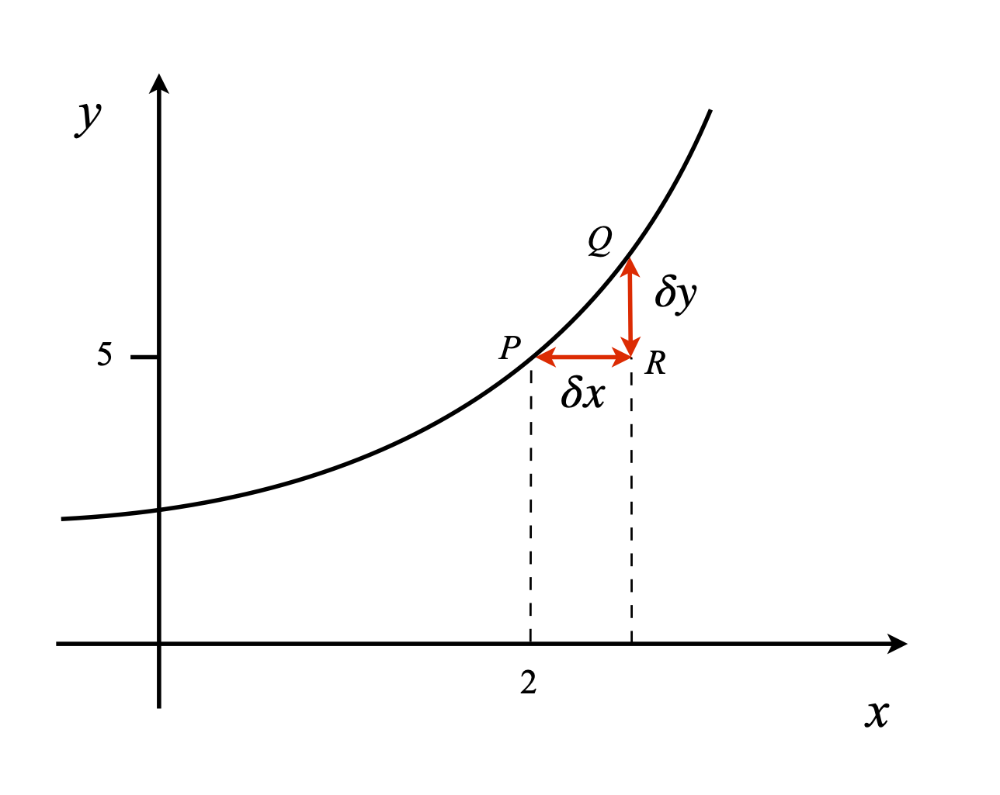
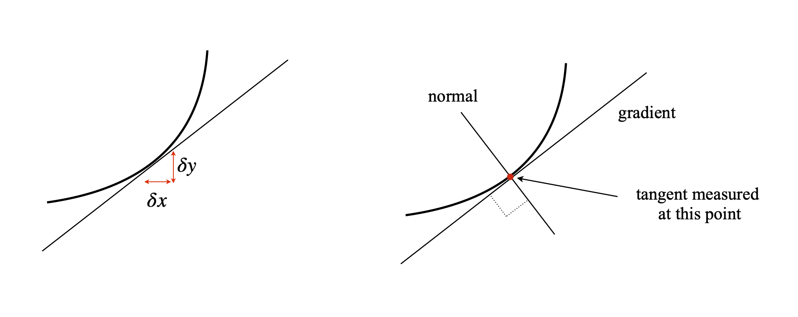

1 - 3.8 Differentiation, gradients & basic functions
Contents
1 - 3.8 Differentiation, gradients & basic functions#
# import all python add-ons etc that will be needed later on
%matplotlib inline
import numpy as np
import matplotlib.pyplot as plt
from sympy import *
init_printing() # allows printing of SymPy results in typeset maths format
plt.rcParams.update({'font.size': 14}) # set font size for plots
1 Concepts#
Differentiation allows us to obtain the ‘slope’, or gradient, of a function or the rate of change of some quantity with time. Integration allows us to obtain the area under a curve, and this is described fully in the next chapter. Differentiation and integration are shown in pictorial form below for any regular function \(f(x)\). By regular is meant a well-behaved function without discontinuities at some value of \(x\).
The differential of the function produces the gradient at the point specified, \(a\) in Fig. 1, and clearly by moving a along the axis to the right the slope will vary from its negative value, as shown, become zero, when the line is horizontal at the bottom of the curve, and then become positive. The definite integral is the area between \(a\) and \(b\) and clearly grows or shrinks if \(b\) is moved along the \(x\)-axis with \(a\) fixed in place. When evaluated the integral is a number.

Fig. 1 Left: Differentiation determines the slope at point \(a\). Right: Integration from \(a\) to \(b\) gives the area under the curve.
The relationship between differentiation, \(\displaystyle \frac{df}{dx}\), and integration, \(\displaystyle \int_a^b f(x)dx\), of an expression \(f(x)\) is shown below: moving to the left is differentiation; to the right integration.
Even if we assume that it will always be possible to differentiate our function \(f(x)\) it will not always be possible to integrate it algebraically, although this can be done numerically. Integrating \(df/dx\) is equivalent to solving a differential equation and these are met primarily in chemical kinetics, quantum mechanics, and dynamics. Before working out the details of differentiation, the effect that a small change in \(x\) and \(y\) has on an expression is examined, and this will lead naturally into differentiation.
2 Differentiation#
2.1 Gradient calculated from small changes in \(x\) and \(y\)#
A straight line with equation \(y = mx + c\) has a constant slope \(m\), which is the change in \(y\) divided by change in \(x\), or \(\delta y/\delta x\) for any interval \(\delta x\). However, most functions are more interesting than the straight line; a parabola for example, \(y = mx^2 + c\), has a gradient that changes with \(x\) and the value \(\delta y/\delta x\) is now clearly going to depend upon how small \(\delta x\) and \(\delta y\) are and where \(x\) is on the curve. If \(\delta x\) is made infinitesimally small, the gradient exactly at position \(x\) is obtained and this is what is achieved with differentiation.
In Fig. 2, the curve is a parabola with the equation \(y = x^2 + 1\). The slope in the region P to Q is \(\delta y/\delta x\). The point P has coordinates \((2, 5)\) and if \(\delta x = 0.3\) then the point Q is \((x, y) = (2.3, 2.32 + 1)\), making \(\delta y = 1.29\) and \(\delta y/\delta x = 4.3\). Similarly, the slope can be calculated starting at any other point on the curve. As \(\delta x\) is small but finite, the gradient is the average over the range \(\delta x\), and if \(f(x)\) is any (normal) function such as \(x^2 + 1\), then its slope is given by
but this only approximately measures the true slope, which is obtained when \(\delta x \to 0\).

Figure 2. Construction of a gradient on a curve.
The slope can also be interpreted in trigonometric terms (see fig 2) because in any right-angled triangle, such as \(PQR\), \(\tan(\theta) = QR/RP\) , where \(\theta\) is \(\angle QPR\) and therefore the gradient is also
In the limit that \(\delta x \to 0\) then
which is the basic equation to determine a derivative. The next steps, described below, illustrate how a variety of different functions are differentiated and sets out the rules for doing this for a whole variety of different functions.
We can also write \(\displaystyle f(x+\delta x)\approx f(x) +\frac{dy}{dx}\delta(x)\),
which can sometimes be useful, see chapter 10 (differential equations) section 3.1(viii).
Note that eqn 2 could is also written as
because \(y\equiv f(x)\).
3 The machinery of differentiation#
In the previous section, the effect a small change \(\delta x\) on a quantity \(x\) was calculated, now \(\delta x\) is made infinitesimally small and the limit found when \(\delta x \to 0\). The consequence of making the change \(\delta x \to 0\) is profound and leads to differentiation, which is of universal application. If [C] is concentration, differentiation with time gives the rate of a chemical reaction, or if \(x\) is position, differentiation gives the speed of the body: rate of change of distance with time. A derivative in general describes the rate of change of one quantity with respect to another and ‘rate of change’ is commonly used not only to mean change with time, its original meaning, but also of any quantity with respect to another; \(dy/dx\) for instance.
If a function has a value \(y = f(x)\) at \(x\) and at a nearby point \(x + \delta x\) its value is \(y + \delta y = f(x + \delta x)\), then the slope is approximately \(\displaystyle \frac{\delta y}{\delta x}=\frac{f(x+\delta x)-f(x)}{\delta x}\) provided that \(\delta x \ne 0\). To find the gradient exactly at the point \(x\), \(\delta x\) must tend to zero; \(\delta x \to 0\), which means finding the limit of the equation, and at the limit \(\delta\) is changed to \(d\) and the derivative of the function is written in mathematical notation as \(dy/dx\) .
The derivative can be written in a number of different ways besides \(\displaystyle \frac{dy}{dx}\), although this is by far the most common. The following forms are equivalent:
The derivative \(df/dx\) is the gradient of the function \(f(x)\) at point \(x\). The gradient is also the tangent to the curve at the point \(x\); a line at right angles to the tangent is called the normal to the curve, Fig. 3.
In the next few sections simple functions are differentiated and the methods for dealing with products of these functions and more complex cases are described. Many are illustrated with SymPy and while this could be used to perform every calculation, using it as a ‘black box’ is not advisable; it is important to understand the approach used to reach a result.

Fig. 3 Left: Infinitesimal changes in \(\delta x\) and \(\delta y\) lead to the calculation of the slope at \(x\) and to differentiation when \(\delta x \to 0\). Right: The gradient and a line normal, i.e. at right angles, to the gradient.
3.1 Finding the limit when \(\delta x \to 0\)#
In finding the limit \(\delta x \to 0\) although \(f(x + \delta x) - f(x)\) and \(\delta x\) tend to zero, their ratio does not and is finite. Even though this may not seem to make sense, it is true also for many ordinary functions, such as \(\sin(x)\), \(x^2\), and so forth. For example, choosing two equations \(y_1 = 3x\) and \(y_2 =2x\) as \(x\to 0\), both \(y_1\) and \(y_2\) tend to zero, but their ratio is \(3x/2x=3/2\) for all values except exactly at \(x = 0\). The similar effect is seen in a triangle because the ratio of the length of the base to the perpendicular side is constant except at exactly \(x = 0\), fig. 4.

Figure 4. The ratio \(y/x\) is constant for different sized similar shape.
The gradient of \(y = x^2\) will clearly change with the value of \(x\) being negative when \(x \lt 0\), zero at \(x = 0\), and increasingly positive with increase in \(x\). See Fig. 2. Let us consider a point at \(\delta x\) larger than \(x\) then \(y+\delta y=(x+\delta x)^2\) and therefore \(\delta y=2x\delta x+δx^2\) so that \(\displaystyle \frac{\delta y}{\delta x} =2x+\delta x\) which is the average gradient in the region \(x \to x + \delta x\). Next, making \(\delta x\) smaller and smaller to evaluate the limit, \(\delta x\to \) 0 produces the result,
Sometimes \(d/dx\) is called the differential operator because it operates on \(x^2\) to form 2\(x\), which is the gradient at any point \(x\). Now that \(x^2\) has been differentiated, returning to equation (2) an approximate gradient of \(4.3\) was found for the parabola. The true value at \(x = 2\) is \(4\) so our estimate was reasonable but still about \(7\)% out, however, it was more difficult to calculate than the exact value!
3.2 Differentiating exponentials#
The exponential function is very important in science and arises in many situations. For example, in chemical kinetics when a molecule such as ICN dissociates,
the rate of decrease of the reactant concentration \(C\) is a first-order process, with rate constant \(k = 5 \cdot 10^{12}\;,\mathrm{ s^{-1}}\) and the concentration changes as
where \(C_0\) is the initial amount present. The differential of the exponential function is easily derived. Suppose that in a small additional time \(\delta t\), the concentration of molecules changes by \(\delta C\) becoming
and therefore \(\displaystyle \delta C= C_0e^{-kt}\left( e^{-\delta t} -1\right)\). Dividing both sides by \(\delta t\) gives
To find the limit \(\delta t \to 0\), the standard expansion formula of the exponential must be used, which is \(e^{-x}\approx 1 - x + x^2/2 - \cdots\), and then only the first two terms are retained because for small values of \(x\), clearly \(x^2 \ll x\). The result is
and
producing the differential of the exponential. By substitution of the original equation, this result can be written as
which is the first-order rate equation; the rate of change is proportional to the amount of substance unreacted at time \(t\), which is \(C\) and the negative sign shows that it is decreasing in concentration at time progresses.
In the general case
then its derivative is the function itself multiplied by the constant multiplier of the \(x\) in the argument of the exponential. Far simpler when put as an equation
If \(\displaystyle y = e^x\), then the value of the gradient is the size of the function itself; \(\displaystyle \frac{d}{dx}e^x=e^x\)
3.3 Differentiating powers of \(x\)#
The similar procedure making \(\delta x \to 0\) can be followed for lots of different functions, but need not be carried through because the results and methods are well understood and the results will be quoted. The derivatives of \(\displaystyle y = x^n\) where \(n\) is any positive or negative number, including fractions, have the form
some examples are \(\displaystyle \frac{d}{dx}x^4=4x^3 \qquad \frac{d}{dx}x^{-3}=-3x^{-4} \qquad \frac{d}{dx}x^{-3/2}=-\frac{3}{2}x^{-5/2}\)
As \(3/2\) is a fraction \(n\) is not restricted to be an integer.
The calculate the result for a general power \(n\) i.e. differentiate \(f(x)=x^n\) we have to calculate the function at some small increment \(\delta x\) to \(x\) and then divide by \(\delta x\). Thus \(f(x+\delta x) = (x+\delta x)^n\) and now we need to use the binomial theorem to expand the power. This is
The series will terminate if \(n\) is an integer but not otherwise, but as it happens this does not matter as we shall ignore terms that are multiplied by \(\delta x\) as they tend to zero in the limit \(\delta x \to 0\).
Using this series then substituting for \(a\) and \(b\) gives
The next step is to subtract \(f(x)\) and divide by \(\Delta x\), this gives
Letting \(\delta x \to 0\) produces the familiar formula \(\displaystyle \frac{dy}{dx}=nx^{n-1}\).
3.4 Differentiating powers of \(y\)#
The differential of \(y\) is \(dy\) ; that of \(y^2\) is \(2y dy\) where the power of \(y\) is differentiated as if it were \(x\) then multiplied by the differential of \(y\) itself. It is very important to remember to do this. An example is,
The equation could also have been written as, \(\displaystyle y=x^{4/3}\) producing \(\displaystyle \frac{dy}{dx}=\frac{4}{3}x^{1/2}\) which is the same when worked through. Try it if you are not convinced.
If \(g\) is a function of \(y\) such as \(y^3\) then, formally,
3.5 Differentiating constants#
Constants always differentiate to zero because a graph of \(y\) = constant has a zero gradient.
3.6 Differentiation using SymPy#
x,y,a,b,n = symbols('x,y,a,b,n') # define some symbols
diff(x**n,x) # differentiate x**n once with respect to x
eq0 = sin(a*x)*tan(b*x**2)
diff(eq0,x)
eq1 = sin(x**3)
diff(eq1,x,2) # differentiate twice wrt x
eq1.diff(x,2) # alternative syntax
y = Function('y')(x) # differentiate y**2 where y is a function of x , y**3=ln(x)
eq2 = y**3 - ln(x)
diff(eq2, x)
3.7 Repeated Differentiation#
The result of differentiation is often another function in \(x\), so it is possible to differentiate again. Performing the operation twice is written as \(\displaystyle \frac{d^2}{dx^2} f(x)\), and the notation is similar even if you must differentiate three or more times. Sometimes the first derivative is written as \(f'\), the second as \(f''\), and so forth. The second derivative means perform the differentiation twice over, the third derivative three times etc.,
For example, if \(y = ax^2\), differentiating once produces \(dy/dx= 2ax\) and differentiating this result gives
Differentiating again produces zero, \(\displaystyle \frac{d^3y}{dx^3}=0\) because \(a\) is a constant and one cannot go any further. Any positive integer power of \(x\) repeatedly differentiated will eventually result in zero.
The general \(n^{th}\) derivative of \(x^m\) is
a result that was first obtained by Euler in 1730. The factorials arrive by simplifying the product \(m(m-1)(m-2)((m-1)\cdots\) into a ratio of factorials.
For exponentials repeated differentiation never produces zero.
Continuing the differentiation, the powers of \(a\) increase and the sign alternates being positive for even powers and negative for odd ones. Therefore the \(n^{th}\) derivative is
Incidentally, this last equation tells us that the solutions of this type of differential equation are exponentials; \(n\) can be \(1, 2, 3\), and so forth.
3.8 Differentiating many variables and Partial Differentiation#
Some functions depend upon more than one variable, say \(x\) and \(z\), which is written as \(y(x, z)\) or \(f(x, z)\), it is now possible to differentiate with respect to \(x\) then \(z\) or vice versa. For example, if \( \displaystyle y(x, z) = x^3z^4\), differentiating by \(z\) but keeping \(x\) constant produces
and similarly treating \(z\) as a constant
These types of derivatives are normally called partial derivatives and written with a curly ‘d’ and often brackets with a subscript to make it clear what is being held constant. Thus the notation for the last examples could be
Repeating the differentiation, first in the order \(x\) and \(z\) then \(z\) and \(x\) produces the same result,
(i) Change in enthalpy, entropy & heat capacity from electrochemical potential \(\epsilon\) vs. \(T\)#
In an electrochemical cell the enthalpy at constant pressure is given by
where \(\epsilon\) is the measured voltage (potential), \(n\) the number of electrons transferred in the reaction and \(F\) the Faraday constant. The entropy change is
and the change in heat capacity
In the reaction between hydrogen and silver chloride the change of cell potential \(\epsilon\) with temperature has been measured with great accuracy over the range \(0\to 90^\text{o}\) C in 0.1 M HCl solution. The reaction is
and
and the temperature was measured in degrees Celsius. The derivatives are
and
The temperature \(T\) in the equations 8a and 8b only, but not in the derivatives as the constants here are calculated in degrees Celsius, has to be replaced with \(T\to T+273\) so that the results are obtained in SI units. The enthalpy is given by
and the heat capacity,
where the temperature is still in Celsius. These results \(\Delta H = -39.287\;\mathrm{kJ\,mol^{-1}}, C_p=-158.8 \;\mathrm{J\,mol^{-1}K^{-1}}\) at \(25^\text{o}\)C agree closely with those obtained from purely calorimetric experiments, \(C_p=-161 \;\mathrm{J\,mol^{-1}K^{-1}}\) (data from Lewis & Randall 1961, Chapter 24).